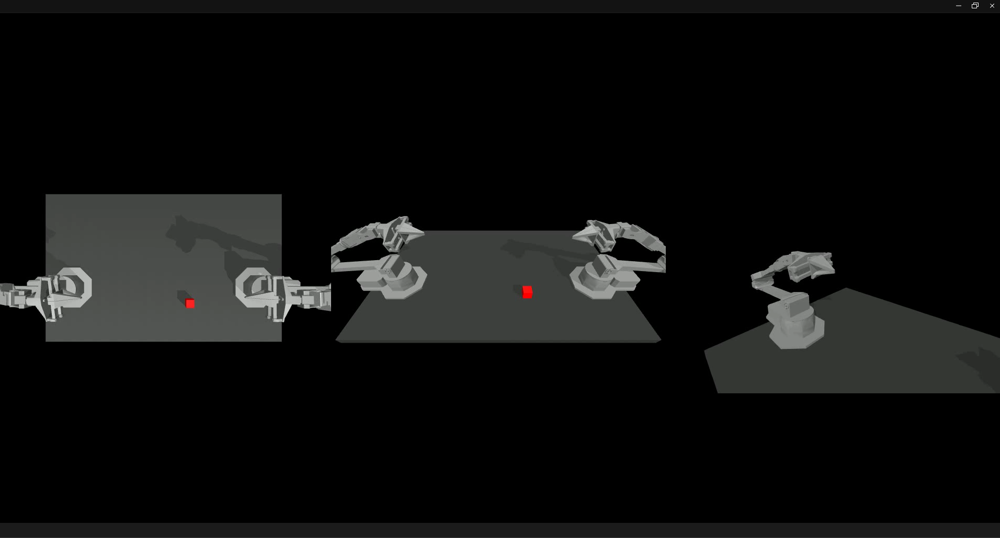
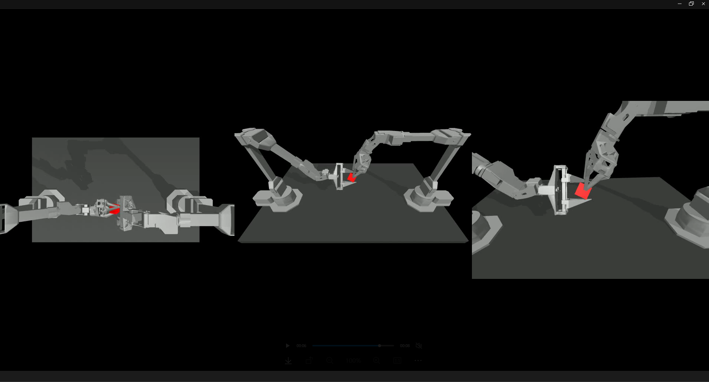

开始读第一篇论文《Learning Fine-Grained Bimanual Manipulation with Low-Cost Hardware》并准备复现
- GitHub 仓库: tonyzhaozh/act
- 项目主页: ALOHA 2
核心概念：ACT (Action Chunking with Transformers)
ACT 旨在解决机器人模仿学习中的一个关键难题：如何让机器人不仅学会下一个动作，还能生成一连串平滑、连贯、面向未来的动作序列，以完成复杂的长时间跨度任务。
这篇文章主要想解决的问题：
- 成本太高： 很多机械臂可以完成高精度的任务，但是设备太贵。
- 误差累积问题： BC（Behavioral Cloning）是好算法，但是会不断地累计误差。
训练流程与算法优势
训练流程
- 首先使用 ALOHA 收集人类演示数据。
- 接下来，训练 ACT 根据当前观察结果预测未来动作序列。
- 在测试时，加载验证损失最低的策略并在环境中部署。
- 挑战：主要挑战是误差累积，即先前动作的误差导致状态超出训练分布。
算法优势
- 动作分块 (Action Chunking)：直观地讲，一个动作块可能对应于抓取糖果包装纸的角落或将电池插入插槽。我们将块大小固定为 \(k\)：每 \(k\) 步，智能体接收一个观察结果，生成下一个 \(k\) 个动作并按顺序执行。这意味着任务的有效范围减少了 \(k\) 倍，同时有助于模拟人类演示中的非马尔可夫行为。
- 时间集成 (Temporal Ensembling)：简单的动作分块可能导致运动不连贯。为了提高平滑性，我们在每个时间步查询策略，使不同的动作分块相互重叠。
- 加权平均：我们对同一时间步预测的多个动作进行加权平均，采用指数加权方案 \(w = \exp(-m * i)\)，其中 \(w\) 是最老动作的权重。
- 架构：使用 Transformers 实现了 CVAE 编码器和解码器，旨在跨序列合成信息并生成新序列。
仿真环境准备
在进入复现阶段前，需要了解以下工具链：
* MuJoCo：物理引擎。
* dm_control：定义机器人的结构。
* OpenGL / EGL：渲染器，模拟机器人的摄像头。
* h5py：记录机器人的动作，打包进入 .hdf5 文件。
模仿学习仿真的普遍流程
- 训练专家演示数据
- 仿真中：用脚本控制机器人，完美执行 50 遍任务。
- 真机上：人手拿着主手（遥操作），控制机器人做 50 遍任务。
- 启示：数据的质量决定了 AI 的上限。如果脚本或演示中出现手抖，AI 也会学会手抖。
- 策略训练
- 将
.hdf5文件喂给 ACT 神经网络。 - 原理：监督学习。让 AI 看着图片（Input），去猜演示做了什么动作（Label），通过 Loss 函数不断优化。
- 将
- 策略评估
- 换上训练好的 AI 模型来控制机器人，观察其是否真正掌握了技能。
提示：仿真成功后，代码不需要修改即可部署到机器人（只需将真机数据转为
.hdf5格式），剩下的只是硬件调试。
.hdf5 文件结构
/observations/images：图片数据（模拟眼睛）。/observations/qpos：关节角度（模拟本体感觉）。/action：动作指令（专家操作记录）。
复现步骤详解
第一步：安装环境和下载代码
-
下载仓库代码
-
创建 Conda 环境
-
安装基础依赖
# 换清华源 (可选，但推荐) pip config set global.index-url [https://pypi.tuna.tsinghua.edu.cn/simple](https://pypi.tuna.tsinghua.edu.cn/simple) # 安装 PyTorch 和其他核心库 pip install torchvision torch pyquaternion pyyaml rospkg pexpect mujoco==2.3.7 dm_control==1.0.14 opencv-python matplotlib einops packaging h5py ipython -
安装 DETR 子模块
-
安装系统级图形库 (解决 MuJoCo 报错)
-
手动下载 ResNet 权重 (解决网络卡顿)
- 下载地址：resnet18-f37072fd.pth
- 将文件拖入
act文件夹后执行：
-
修改配置文件
第二步：仿真运行
-
采集专家数据
-
开始训练
-
推理验证
第三步：查看结果（WSL 用户）
- 在 Windows 文件夹地址栏输入
\\wsl$并回车。 - 导航至：
Ubuntu -> home -> [你的用户名] -> act。
训练结果展示

